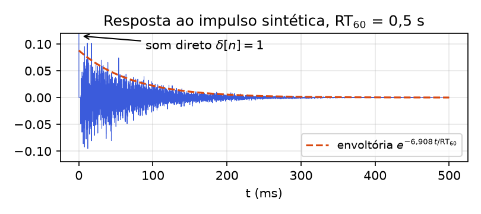

IA940 · Análise e Síntese de Sinais Musicais · Projeto Final
Quem está falando? MFCC × YAMNet sob reverberação
Trilha Voz · identificação de locutor com kNN no ESD (10 locutores de inglês), com a sala reverberando de RT60 = 0 a 2 s.
Kevin Inofuente ColqueLuiza Viana SouzaGuilherme Maia Masetto
A pergunta · qual vetor ainda reconhece quem fala quando a sala reverbera?
Duas formas de transformar 3 s de voz em um vetor
MFCC médio20 números
Áudio
3 s a 16 kHz
48 000 amostras
→
Quadros
janelas de 25 ms a cada 10 ms: a voz é estável nesse trecho
≈ 300 quadros
→
Espectro mel
FFT + 40 filtros espaçados como o ouvido (finos no grave)
300 × 40
→
log + DCT
log ≈ sensação de volume; a DCT resume a forma do espectro
300 × 20
→
Média no tempo
um valor médio por coeficiente
vetor de 20
Guarda: a forma média do espectro → o trato vocal, o timbre de cada pessoa.
Perde: a ordem no tempo (quais sons vieram antes ou depois).
YAMNet1024 números
Áudio
o mesmo arquivo, 3 s a 16 kHz
48 000 amostras
→
Log-mel
espectrograma com 64 bandas mel, quadros de 10 ms
≈ 300 × 64
→
Janelas de 0,96 s
recortes de ~1 s, um a cada 0,48 s
≈ 5 × (96 × 64)
→
Rede neural (CNN)
MobileNet treinada no AudioSet (2 M vídeos, 521 tipos de som); paramos na penúltima camada
5 × 1024
→
Média no tempo
média das janelas
vetor de 1024
Guarda: padrões tempo-frequência aprendidos para dizer que som é (fala, música, cachorro…).
Perde: foi treinada para que som, não para quem fala: a identidade é um efeito colateral.
Os dois terminam com uma média no tempo: um arquivo → um vetor. É sobre esses vetores que o classificador decide quem está falando.
IA940 · Projeto Final · Trilha Voz2 / 16
Como medimos · o mesmo experimento para os dois vetores
Cadastrar no estúdio, reconhecer na sala
1
Dados
17 500 áudios do ESD: 10 locutores × 1 750 frases. Acertar por sorte = 10 %.
2
Dividir 70 / 30
12 250 de treino e 5 250 de teste, a mesma proporção de cada locutor. Um arquivo nunca está nos dois lados.
3
Reverberar só o teste
Treino limpo (o “cadastro” da voz); o teste passa pela sala nos 9 níveis de RT60, de 0 a 2 s.
4
Classificar com kNN (k = 5)
z-score com média e desvio do treino; cada áudio de teste recebe o locutor mais votado entre seus 5 vizinhos mais próximos.
5
Medir e repetir
Acurácia = % do teste com o locutor certo. Repetimos com 5 divisões diferentes → média ± desvio.
Como o kNN decide
Cada ponto é um arquivo de treino (um vetor). A ★ é um áudio de teste: dos 5 vizinhos mais próximos, 4 são de A → o kNN diz “A”. Se a sala desloca o vetor (☆), os vizinhos passam a ser de outro locutor e o voto erra. Medir esse deslocamento é o experimento.
IA940 · Projeto Final · Trilha Voz3 / 16
Previsão registrada · 23/10 (antes de qualquer degradação)
Apostamos que o YAMNet cairia mais devagar que o MFCC
MFCCYAMNet(curvas desenhadas à mão)
Justificativa (texto de 23/10)
MFCC usa janelas de ≈ 25 ms; a cauda da reverberação dura centenas de ms e mistura quadros vizinhos.
YAMNet foi treinado no AudioSet: ≈ 2 milhões de clipes do YouTube, gravados em ambientes muito variados → deveria ser mais robusto.
06/11, sem degradação: MFCC 98 %, YAMNet só 55 %. Mantivemos a aposta na inclinação: a pergunta virou “o MFCC cai até cruzar o YAMNet?”.
\(\delta[n]\): som direto. \(b[n] \sim \mathcal{N}(0,1)\): campo difuso, milhares de reflexões com fase aleatória.
\(6{,}908 = \ln 1000\), pois \(e^{-6{,}908} = 10^{-3}\): a amplitude cai 1000× = 60 dB em t = RT60, a definição de RT60.
\(g\) escolhido para DRR = 0 dB em 0,5 s ⇒ \(\mathrm{DRR} = 10\log_{10}\!\left(0{,}5\,\text{s}/\mathrm{RT}_{60}\right)\): mesma sala e distância, só a absorção muda (slide 7).
Convolução completa (a cauda fica) e mesmo RMS do original; uma RI diferente por arquivo.

Verificação (integral de Schroeder): RT60 medido 0,108 · 0,209 · 0,302 · 0,488 · 0,696 · 0,993 · 1,503 · 1,992 s para os 8 níveis pedidos.
IA940 · Projeto Final · Trilha Voz6 / 16
Degradação · o segundo número de cada nível
DRR: quanto da voz chega direto × quanto chega pela sala
A cauda preenche as pausas e borra as transições entre fonemas; o espectro médio quase não muda8 / 16
Resultado central · treino limpo, teste reverberado
O YAMNet desaba já em 0,2 s; o MFCC médio resiste até 2 s
média de 5 divisões · faixa = ± 1 desvio · k = 5
80%
MFCC em RT60 = 2 s
30%
YAMNet já em 0,2 s (partia de 55 %)
YAMNet: −6 pontos em 0,1 s, metade em 0,2 s, acaso a partir de ≈ 0,7 s.
MFCC: intacto até 0,3 s (97,5 %), 96 % em 0,5 s, cai quase linear depois.
As curvas não se cruzam. A distância entre elas cresce até 0,7 s (83 pontos) e só diminui porque o YAMNet já está no acaso.
IA940 · Projeto Final · Trilha Voz9 / 16
Variabilidade · 5 divisões por ponto
Em todos os níveis a diferença é dezenas de vezes maior que a dispersão
RT60 (s)
MFCC (%)
YAMNet (%)
Δ pareado (pontos)
Δ > dispersão?
0,0
98,3 ± 0,2
55,4 ± 0,6
42,8 ± 0,7
sim
0,1
97,9 ± 0,2
49,6 ± 0,6
48,3 ± 0,8
sim
0,2
97,8 ± 0,2
30,4 ± 0,2
67,4 ± 0,4
sim
0,3
97,5 ± 0,2
21,4 ± 0,5
76,1 ± 0,4
sim
0,5
96,1 ± 0,2
13,9 ± 0,7
82,2 ± 0,8
sim
0,7
94,2 ± 0,3
10,9 ± 0,5
83,3 ± 0,7
sim
1,0
90,4 ± 0,3
9,9 ± 0,3
80,5 ± 0,3
sim
1,5
84,2 ± 0,3
9,4 ± 0,5
74,8 ± 0,6
sim
2,0
79,6 ± 0,6
9,6 ± 0,3
70,0 ± 0,8
sim
Como comparamos
As duas representações usam as mesmas divisões, então calculamos Δ = acc(MFCC) − acc(YAMNet) em cada divisão e tomamos média ± desvio de Δ.
Critério: |Δ médio| > 2 × desvio de Δ e > o maior desvio das duas curvas.
Robustez da conclusão
Desvios entre divisões < 1 ponto em todos os níveis.
Com k = 1: mesma forma, 1–7 pontos abaixo.
IA940 · Projeto Final · Trilha Voz10 / 16
Previsto × observado
A previsão errou a direção: quem cai primeiro é o YAMNet
previsto (23/10)observado
Previsto
Observado
Cai primeiro
MFCC
YAMNet
A partir de
MFCC ≈ 0,3–0,5 s
YAMNet já em 0,1–0,2 s
Forma
duas logísticas
YAMNet em degrau; MFCC quase linear
Em 2 s
MFCC ≈ 18 %, YAMNet ≈ 32 %
MFCC 80 %, YAMNet 10 %
Os próximos slides explicam o que estava errado no raciocínio.
IA940 · Projeto Final · Trilha Voz11 / 16
Por quê · 1
No YAMNet a informação do locutor não some: ela é deslocada
Pareada: treino e teste reverberados no mesmo RT60
Treino e teste na mesma sala
O YAMNet mantém 42–55 % → a identidade continua no embedding. O colapso é um descasamento de domínio treino-teste.
Quanto a reverberação empurra os pontos?
RT60
0,2 s
0,5 s
2 s
MFCC
0,14×
0,30×
0,61×
YAMNet
3,9×
15×
39×
deslocamento médio ÷ distância média entre centróides de locutores (espaço z-score). Acima de 1×, o vizinho mais próximo é decidido pela sala, não pela pessoa.
IA940 · Projeto Final · Trilha Voz12 / 16
Por quê · 2
A média do MFCC descarta exatamente o que a reverberação estraga
Nossa cauda é ruído branco → \(\mathbb{E}\,|H(f)|^2\) é constante em f: a forma do espectro médio quase não muda.
A reverberação estraga o tempo (transições, pausas) — que a média joga fora.
Sobra um deslocamento em \(c_0\) (energia) e \(c_1\) (inclinação), quase igual para todos os locutores.
YAMNet olha padrões tempo-frequência de 0,96 s
Ataques e transições de formantes são o que a CNN usa — e o que a cauda borra.
Treinado para dizer que som é; a identidade é um resíduo fraco (55 % no limpo).
Até a classe da própria rede degrada: P(Speech) 0,98 → 0,79 → 0,33 em 0 / 0,5 / 2 s.
Controles: sem z-score ou com normalização L2 o YAMNet colapsa igual (55 → 16 → 9 %) · cortando a cauda final do áudio: 34 / 22 / 16 / 11 % em 0,2 / 0,5 / 1 / 2 s — a cauda pesa pouco, o problema é a reverberação dentro da fala.
IA940 · Projeto Final · Trilha Voz13 / 16
Análise de falhas · RT60 = 0,2 s (onde as curvas se separam) · divisão 0
Ouça: acertos e erros de cada representação
Só MFCC acerta 3 601 (69 %) arquivos
0014_000940.wav
limpo
0,2 s
Só YAMNet acerta 41 (< 1 %) arquivos
0014_001551.wav
limpo
0,2 s
Os dois erram 72 arquivos
0011_000595.wav
limpo
0,2 s
Os dois acertam 1 536 arquivos
0013_001401.wav
limpo
0,2 s
Erros do YAMNet: “atratores”
4 locutores (0014, 0012, 0017, 0020) recebem 64 % dos erros; em 1 s, só o 0014 recebe metade. Todos os pontos migram para a mesma região — acerto por locutor vai de 52 % (0020) a 3 % (0015).
Erros do MFCC: vizinhos
Só 113 de 5 250; 39 são 0016 ↔ 0018, as duas vozes mais agudas (F0 ≈ 204 e 243 Hz). Os dois erram sobretudo em emoções de alta excitação (Surprise, Angry, Happy: 56 de 72).
IA940 · Projeto Final · Trilha Voz14 / 16
Conclusões
Para quem fala, o MFCC médio é muito mais robusto à sala que o YAMNet
O que aprendemos
MFCC 98 → 80 % de 0 a 2 s; YAMNet 55 → 10 % (acaso a partir de ≈ 0,7 s). Diferença ≫ dispersão em todos os níveis.
Erramos a previsão por dois motivos: esquecemos que o baseline é uma média (que ignora o tempo) e supusemos que a robustez do YAMNet para “que som é” valeria para “quem fala”.
A informação de locutor no YAMNet existe, mas a sala a desloca 4–40× mais do que os locutores se separam.
Limitações e próximos passos
RI sintética com decaimento igual em todas as frequências. Em salas reais os agudos decaem mais rápido → prevemos que o MFCC cairia mais cedo.
DRR acoplado ao RT60 (uma sala, uma distância); uma RI por arquivo e nível.
ESD em estúdio, sessões por locutor (canal).
Próximos: RIs medidas, CMN no MFCC, embeddings de locutor (x-vector/ECAPA) como 3ª curva.
Notebook completo: Projeto_Final.ipynb · código em src/15 / 16
IA940 · Projeto Final · Trilha Voz
Obrigado! Perguntas?
Código e notebook: github.com/KevinInoCol/Phd-IA940-Analise-e-Sintese-de-Sinais-Musicais-Projeto-Final
Kevin Inofuente ColqueLuiza Viana SouzaGuilherme Maia Masetto
Espectrograma em tempo real · locutor 0013, Neutral
espectro médio (LTAS), dB
nível atual · seco (toque o seco uma vez para comparar)Esc fecha · espaço toca/para · ← → muda o nível